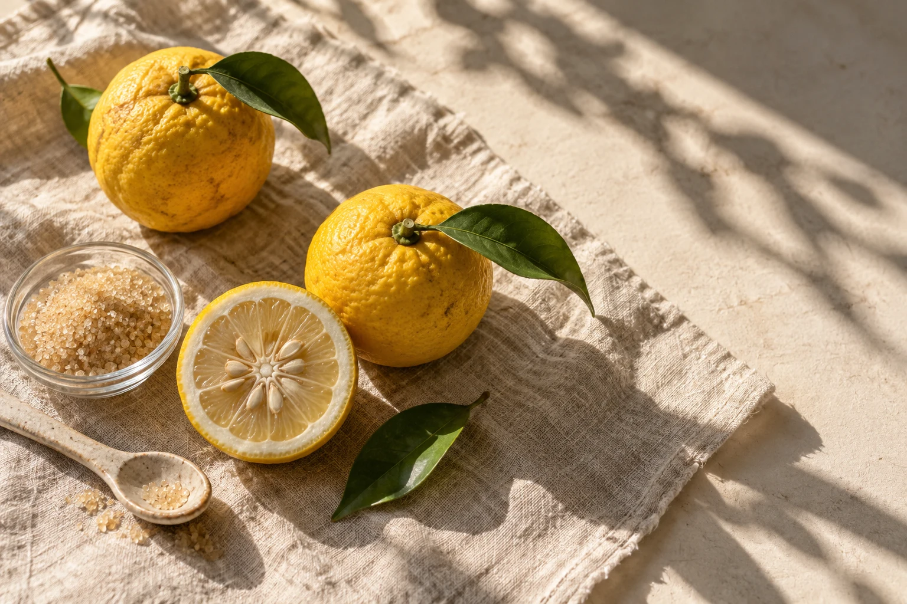
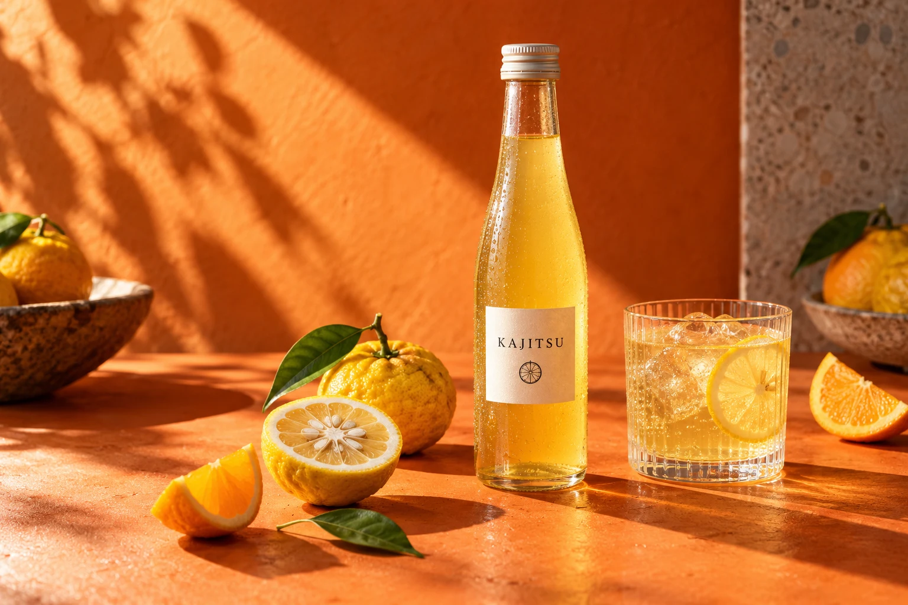

OUR CORDIAL果日のこと
いつもの水が
ちょっと楽しみになる
ふたを開けたときの、ふわっと広がる香り。
ひと口飲んだあとの、やさしいほろ苦さ。
果日は、ゆずを楽しむためのシロップです。
炭酸で割ったり、お湯に溶かしたり。
気分に合わせて、好きな濃さでどうぞ。

A LITTLE SUNSHINE, BOTTLED.
忙しい日にも、好きなグラスで一杯。
ゆずの香りを、暮らしの真ん中に。

ふたを開けたときの、ふわっと広がる香り。
ひと口飲んだあとの、やさしいほろ苦さ。
果日は、ゆずを楽しむためのシロップです。
炭酸で割ったり、お湯に溶かしたり。
気分に合わせて、好きな濃さでどうぞ。

いつもの時間に、違うおいしさを。
気になる写真を選ぶと、作り方が変わります。
REFRESH YOUR AFTERNOON
氷を入れたグラスに果日と炭酸水を。ゆっくり混ぜれば、すっきり爽やかな一杯に。
KAJITSU / YUZU CORDIAL
おうちで少しずつ。大切な人への贈り物にも。
税込・サンプル価格 / 実際の販売はありません
購入の操作デモです。決済・注文は行われません。
以上は制作例のための架空の商品設定です。食品表示・販売条件は実際の販売時に確認が必要です。
果実などを使った、薄めて楽しむシロップです。この作例では、ゆずを使った商品を想定しています。
こちらは架空のブランドの制作例です。商品の注文、決済、配送は行っていません。
商品写真と特徴、価格などを整理して、購入までの流れを設計できます。制作例一覧に戻り、元のやり取りでご相談ください。
次のひと休みに
商品に戻る ↗